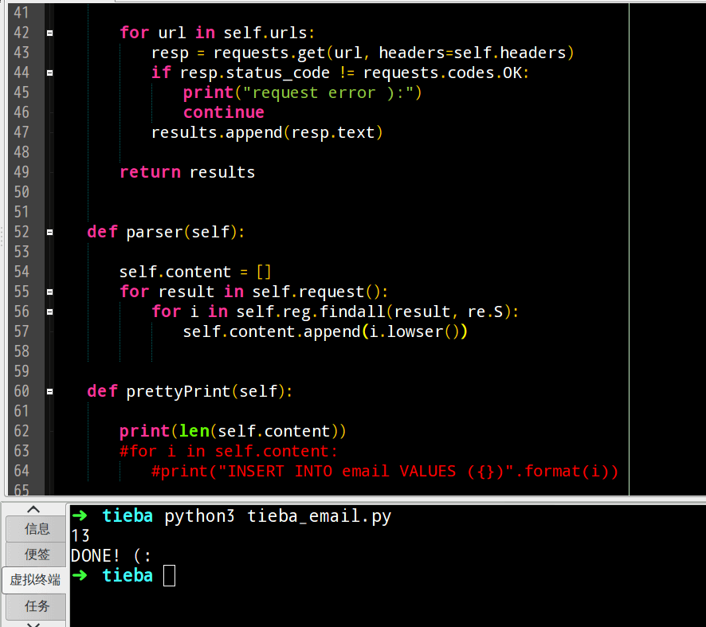
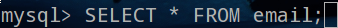
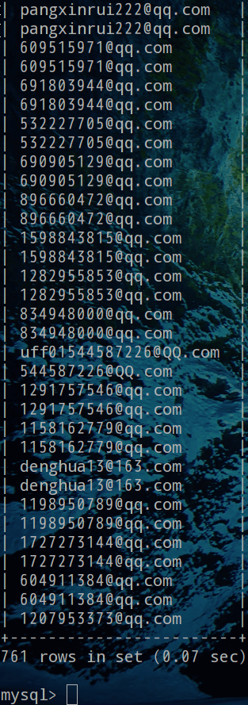
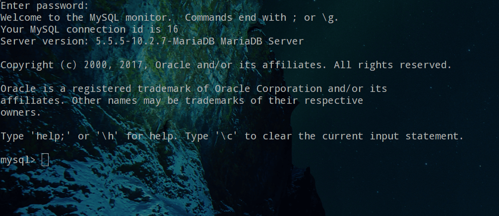
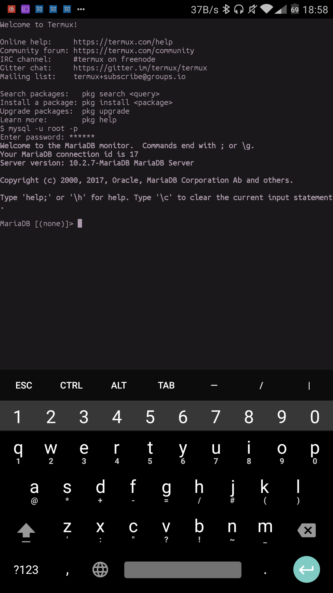
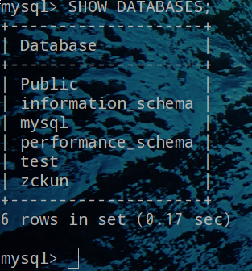
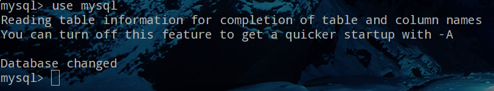
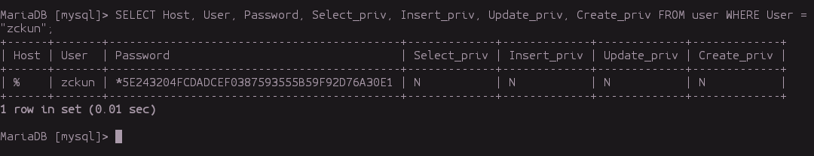
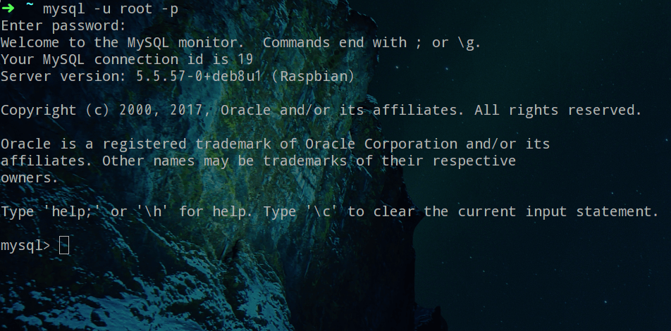
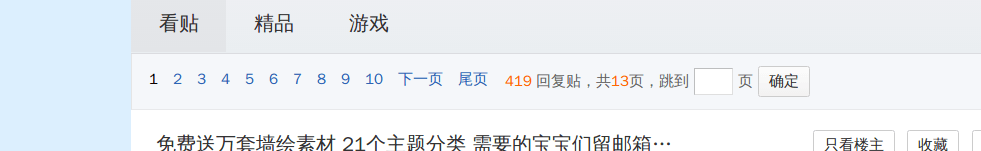

Python爬虫－扒一扒百度贴吧里的email并保存到MySQL
昨晚闲得蛋疼，看了看MySQL的文档，人生第一次用mysql，看了一会儿发现，我操，这么简单，然后就瞎瘠薄搞了搞，今天下午就想写点东西，打开了铁把就想到之前看别人视频写的爬贴吧email，个人觉得写的不好，自己正好没事干，就顺手写了个爬虫，顺带保存到MySQL，开搞把。
国际惯例，先上图 (:

还是看看数据把…输入命令

结果:

一共761条，看起来还不错，当然还是有些不正确的邮箱，代码在这CCCoding
或者直接wget https://raw.githubusercontent.com/ZCKun/CCCoding/master/tieba_email.py下载到本地
说一下要用到的模块
requests
re
pymysq
可能有些刚入这行伙计没接触过MySQL，我就在这简单的说下如何安装和配置，我只有一台装了debian的机器，linux下操作都一样，mac应该也查不了多少，win的话可以百度
首先安装MySQL到你的机器上
这是官网: www.mysql.com/
下载地址: www.mysql.com/downloads/
社区版本下载地址: dev.mysql.com/downloads/mysql/
考虑到有些人像我当年一样没电脑只有一部android手机也写了几个月的代码的情况下，在这里我也说下如何用手机安装1、MySQL（mariadb），请确认你的手机是android并且版本在5.x以上最好6.x
2、首先在你手机安装一个软件－termux，你可以百度或者去google play下载
3、安装好了打开后看到熟悉的终端，输入apt update && apt upgrade
4、然后开始安装mariadb(mysql的那啥。。。)apt-get install mariadb
5、安装好了之后 输入mysqld开启服务
6、然后另开一个窗口输入mysql出错。。内心懵逼啊， 我这特么不是装好了么
7、别慌，termux上安装mariadb时不会要你设置密码，但是我们有办法
8、输入mysqladmin -u root password <你的密码>这样就设置了你的root用户的密码了
9、然后输入mysql -u root -p回车，要求输入密码，填写你刚刚设置的密码就ok了
10、然后开始配置用户的host，以便于你在电脑／手机上可以方便的用python连接，我这里用电脑示范，确保你手机后台在运行服务，在你的计算机上登录你手机上的mariadb时可以用mysql -h host -P port -u user -p这里的host是指你手机的ip(局域网的)，port端口mysql／mariadb默认是3306，user就是登录的用户
11、在你登录成功后，出现如下界面:

12、手机上:

之后输入的命令啥的都一样，我就不再一一截图了。。。
输入SHOW DATABASES;或者show databases;查看有哪些数据库

可能和我的不一样，很正常，你只要确认有mysql这个数据库就可以了
接着输入USE mysql或use mysql相当于进入该数据库

看到和我的提示差不多一样就没毛病
你可以用
SHOW TABLES;查看有哪些数据表，但是我这里就不瞎弄了在这里我们新建一个用户，并让其他机器可以连接到来方便我们开发
输入INSERT INTO user (Host, User, Password) VALUES ("%", "用户名", "密码");
解释一下“％”这玩意儿，如果你想让别处的机器也可以连接当前数据库的话，就这样写，“％”是ＭySQL里的通配符如过用上面的命令出错了，那么你还是。。。。。。。别慌，我有办法
输入CREATE USER "用户名"@"%" IDENTIFIED BY "密码";但是这还不够，接着先为刚刚创建的用户新建一个数据库，比如叫：testDB
输入CREATE DATABASE testDB;然后给它这个数据库的所有权限，接着输入
GRANT ALL PRIVILEGES ON testDB.* TO "刚刚创建的用户名"@"%" IDENTIFIED BY "密码";创建完了，然后检查一下是否成功，输入
SELECT Host, User, Password, Select_priv, Insert_priv, Update_priv, Create_priv FROM user WHERE User = "你刚刚创建的用户名";

出现如上图显示有东西就是创建成功，password是经过加密的，还有一点忘说了，这操作只能在root用户下才可以
linux的直接
sudo apt-get install mysql-server就搞定了，当然不闲麻烦的去官网下载
在安装期间会要求你设置root密码，这是mysql的root用户密码，最好别忘记
在Windows上，安装时请选择UTF-8编码，以便正确地处理中文
在Mac或Linux上，需要编辑MySQL的配置文件，把数据库默认的编码全部改为UTF-8。MySQL的配置文件默认存放在/etc/my.cnf或者/etc/mysql/my.cnf：
2
3
4
5
6
7
8
9
10
11
default-character-set = utf8
[mysqld]
default-storage-engine = INNODB
character-set-server = utf8
collation-server = utf8_general_ci
然后一切妥了，测试是否安装成功，终端下输入 mysql -u root -p 然后会车输入你的root密码，出现这样的界面就是ok了

对了，忘了创建数据表了，，，
输入
CREATE TABLE email (email VARCHAR(30));
这里第一个email是数据表的名称，第二个email是列的名称，30的意思就是限制大小30字符以内，不一定要用VARCHAR，你也可以用CHAR、DATA来表示，主要看你要存啥东西
终于开始讲爬虫了，我日，码了一个多小时的字。。。
本次的目标网址http://tieba.baidu.com/p/5178628955?pid=108443531615&cid=0#108443531615，我们得到他"?"前面的那串数字就可以了

一共13页，思路来了
１、获取爬取的帖子的页数，然后生成链接列表
２、迭代链接列表请求，之后解析
３、连接mysql数据库，然后存储
获取帖子页码:1
2
3
4
5
6
7
8
9
10
11
12
13
14def build(self):
'''获取帖子有多少页'''
resp = requests.get(self.tmp_url, headers=self.headers)
if resp.status_code != requests.code.OK:
print("Request Error ):")
sys.exit()
try:
page = int(re.findall('共<span class="red">(.*?)</span>页', resp.text, re.S)[0])
except Exception as e:
print("Error:", e)
sys.exit()
_ = "http://tieba.baidu.com/p/%s?pn={}" % self.id
self.urls = [_.format(pn) for pn in range(1, page+1)]
连接数据库并保存:1
2
3
4
5
6
7
8
9
10
11
12
13
14def connection_mysql(self):
'''保存到MySQL数据库'''
db = pymysql.connect('地址', '用户名', '数据库密码', '连接的表名')
cursor = db.cursor()
for i in self.content:
try:
cursor.execute(f'INSERT INTO email VALUES ("{i}")')
except Exception as e:
print('\033[1;31mERROR\033[0m: \033[0;31m%s\033[0m ):' % e)
continue
db.commit()
cursor.close()
db.close()
print('DONE! (:')
详细代码可以在这里看到 CCCoding